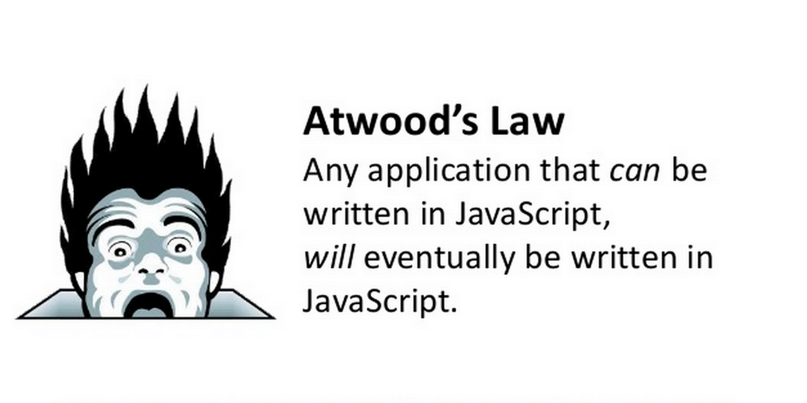
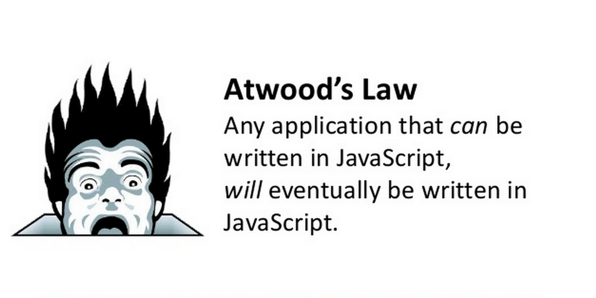
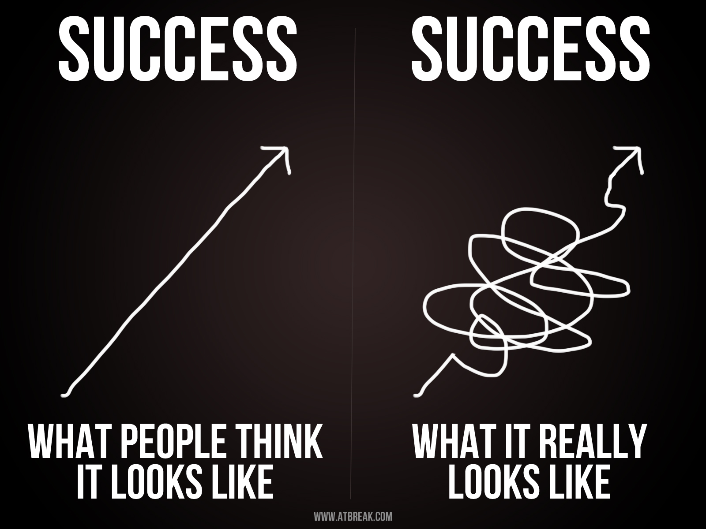

Getting Comfortable Being Uncomfortable
Lessons Learned One Year After
the Nashville Software School
Created by
Aimee Knight /
@Aimee_Knight
- Average growth rate for software engineers from 2012 - 2022:
33%
- Average growth rate for all other occupations from 2012 - 2022:
11%
- Average salary for a software developer:
$93,000
- Average salary for all other jobs:
$35,000
- 2,000 students graduated from a bootcamp in 2013
- 6,000 students graduated from a bootcamp in 2014
- Number of US based programming schools: 43
How do we effectively funnel incoming developers to address this problem?

My Story

 

JavaScript
Lessons Learned For Junior Developers
What programming language should you pick?
How do you find a mentor?
Can you study programming for 10 weeks and make six figures?
Nope!


Employers probably aren’t hiring you expecting you to solve their most complex problems. Sorry! :(
If you're not making mistakes, then you're not doing anything. I'm positive that a doer makes mistakes. - John Wooden

Hard work beats talent!
All jobs are not created equal!

Hard work with practical approaches

Hard work with practical approaches
Getting up to speed...
Hard work with practical approaches
The Boy Scout Rule
Moving past tutorials

Working Smart

Practice makes permanent
One thing at a time
Mental Awareness
Stop calling yourself dumb!
When you don’t know how to do something,
or you come across a tough bug remind yourself
Every time something goes wrong in your program,
you have an opportunity to learn something new!
Pair Up!
Peer Learning
Working with a mentor
Bootcamps vs Going at it alone
Slack Channels
Meetups
Hangouts

Mentoring
Developers who received mentoring were promoted
five times more often than those who didn’t.
Expect to put in some overtime!
Already have this stuff down?
Here’s what you can do to help...
Preparing yourself and the team


Preparing yourself and the team
Imagine... you're adopting a dog

Preparing yourself and the team
Establishing a culture of communication
Preparing yourself and the team
Frame conversations accordingly
Preparing yourself and the team
Good project management
Preparing your code base
Testing
Defect percentages decreased
between 40% - 90% when compared to products not developed with TDD.
5% - 35% increase in initial development time.
Coding Standards, Styles Guides & Linting
Comments
JSCS
JSHint Maxcomplexity
Practical approaches to collaborating productively
Code Reviews

Practical approaches to collaborating productively
Code Reviews
Practical approaches to collaborating productively
Pairing
Pro Tip:
Junior's can boost your career!

Using a junior to boost your career
Mentors are six times more likely to be promoted
and 20% more likely to get a raise.
Above all...
Be Nice!

Uncomfortable?
You're in good company!
- Walt Disney: Fired from his job at a newspaper because, “he lacked imagination, and had no good ideas.”
- Thomas Edison: Growing up was told he was “too stupid to learn anything.”
- Oprah Winfrey: Fired from her job as a television reporter because she was “unfit for tv.”
- Jerry Seinfeld: First time he walked on stage at a comedy club, he froze and was booed off.
- JK Rowling: "Harry Potter and the Philosopher’s Stone" was rejected by the first 12 publishers it was submitted to.
- Michael Jordan: Cut from his high school basketball team.
- http://www.usnews.com/opinion/articles/2014/09/15/the-stem-worker-shortage-is-real
- http://www.bls.gov/ooh/Computer-and-Information-Technology/Software-developers.htm#tab-1
- http://venturebeat.com/2014/05/03/coding-bootcamps-will-graduate-6000-people-in-2014-3x-as-many-as-last-year/
- http://research.microsoft.com/en-us/groups/ese/nagappan_tdd.pdf
- http://www.forbes.com/sites/lisaquast/2011/10/31/how-becoming-a-mentor-can-boost-your-career/